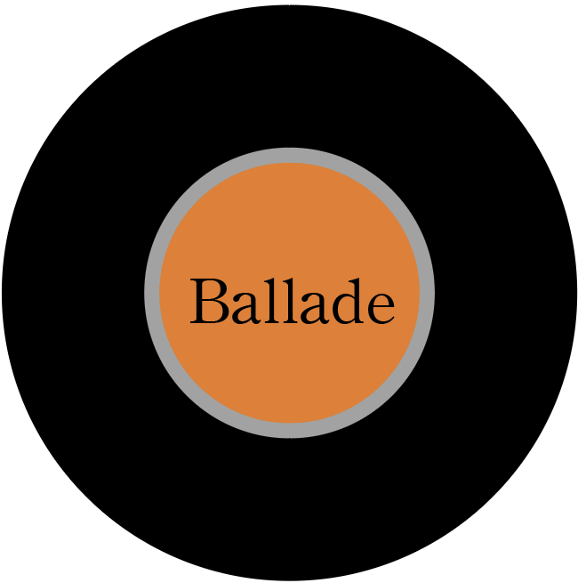
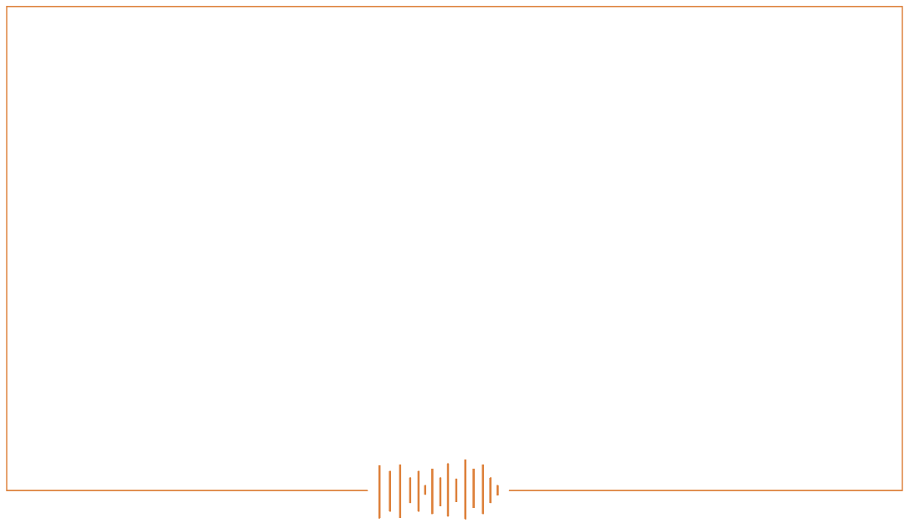

발라드형
당신에게 감성 넘치는 발라드를 추천합니다!
당신의 장점은?
당신은 따뜻한 인상을 가지고 있는 것인 당신의 최대 장점이에요.
이러한 따뜻한 인상은 누구에게나 호감이라서 가만히만 있어도 주변에 사람들이 금방 우글우글해져요.
당신의 단점은?
당신은 인간관계에 관심이 너무 많은 것이 단점이에요.
주변 상황을 포괄적으로 고려하고 판단하면서 마음이 너무 지쳐있어요.
당신의 추천노래는?
단점으로 인해 마음이 지쳐있는 당신!
‘그때 그 순간 그대로’ , ‘헤어지자 말해요’ ,‘모든 날 모든순간’ 같이 감성이 뿜뿜한 노래로 위로 받는 것은 어떨까요?
나를 다시 알아볼까?
되돌아가기